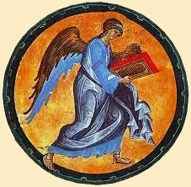
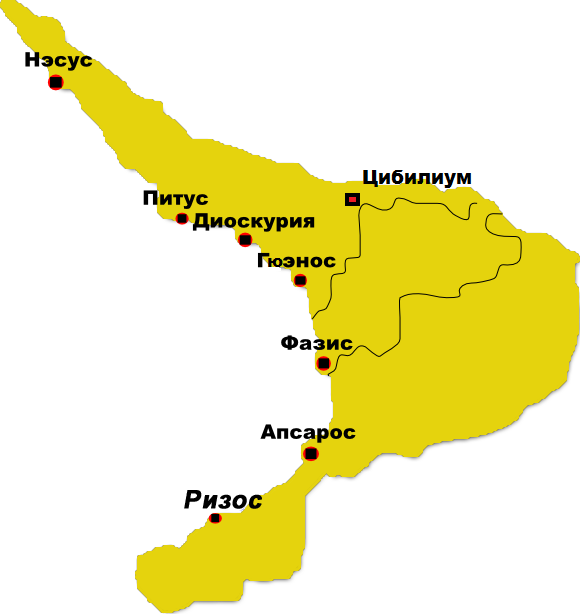

|

Юлиан (кон. I - нач. II вв.) Царь Апсилии.
Утвержден во власти римским императором Траяном (98-117 гг.). Апсилы занимали восточный берег Черного моря к западу от Фазиса (Риона) до реки Мачара.
Предки современных абхазов - апсилы впервые упоминаются в сочинении римского писателя Плиния Секунда “Естественная история”. Здесь же содержится сообщение о крепости (кастелле) Себастополисе и городе Диоскуриаде.
Рисмаг (нач. II в.). Царь абазгов.
Утвержден во власти римским императором Адрианом (117-138 гг.). Абазги занимали центральное географическое положение (межде реками Мачара и Псоу) между абхазскими племенами санигов (с запада) и апсилов (с востока). Именно вокруг абазгов консолидируются в дальнейшем родственные этнические группы в единую абхазскую народность.
В это время в Себастополисе, находившемся в земле абазгов, стоял римский гарнизон. Прежде город назывался греческим именем Диоскурия, однако с приходом римского владычества был переименован в честь римского императора Августа, имевшего прозвище “Себастос” (“Величественный”).
В 137 году по заданию императора Адриана на восточных берегах Черного моря побывал в инспекционной поездке легат Флавий Арриан, наместник Рима в Каппадокии. Знакомясь с состоянием римских укреплений и обустройством гарнизонов, он посетил и Себастополис, о котором в частности сообщает: “ Мы раньше полудня прибыли в Себастополис... Поэтому мы в тот же день успели выдать жалованье солдатам, осмотреть коней... больных и хлебные запасы, обойти стену и ров... Себастополис прежде назывался Диоскуриадой, колония Милета... Крепость Диоскуриада представляет собой конечный пункт римского владычества на правой стороне от входа в Понт”.
В 1896 году в Сухуме был найден фрагмент плиты с латинской надписью, в которой упомянуты император Адриан и Флавий Арриан. Эта находка подтверждает римское господство на абхазском побережье во II веке нашей эры.
Спадаг (нач. II в.). Царь санигов.
Утвержден во власти императором Адрианом (117-138 гг.). Саниги проживали по восточному побережью Черного моря примерно от реки Псоу до Шахе. И в более позднее время саниги, наряду с абазгами и лазами, называются среди народов “добровольно признавших римское господство”, что подразумевало воинскую повинность, то есть службу в римском войске.
Стахемфлак (нач. II в.).
Царь зихов, проживавших между Туапсе и Анапой. Западные зихи считаются предками приморских адыгов. Восточные зихи - предки западных абхазских племен. Этим понятиям вполне соответствуют позднейшие “Alba Zichia” и “Maura Zichia” (“Восточная Зихия” и “Западная Зихия”) генуэзских карт XIII-XV вв.
Ригвадин (нач. IV в.). Владетель Абазгии в правление римского императора Диоклетиана, жестокого гонителя христиан. Известно, что Ригвадин получал рекомендации от императора относительно условий заключения и содержания сосланных в Абазгию 40 антиохийских воинов-христиан, среди которых были мученики Орентий, Лонгин и еще пятеро их братьев, почитаемых христианской церковью. Причем, Лонгин умер в Абазгии и был похоронен в Питиусе (Пицунде).
Позже, применительно к правлению императора Феодосия II (409-450), упоминается о лучшем соединении абазгов в римском войске (“Ala prima Abasgorum”) в Фивах. Это есть прямое указание на участие абазгов в военных предприятиях Рима в виде организованного и постоянного воинского формирования.
Скепарна (550-е гг.). Правитель Западной Абазгии.
Вместе с Опситом, правителем Восточной Абазгии поднял антивизантийское восстание в 550 году. В результате мятежа византийские гарнизоны были изгнаны из Абазгии.
Ожидая карательные меры со стороны византийского императора, Скепарна явился за поддержкой к персидскому шаху Хосрову. Прибывшие в результате этой миссии персидские войска под командованием Набеда не смогли закрепиться в Абазгии и покинули ее. Дело в том, что византийцы, уходя из Абазгии перед ожидаемым наступлением персов, разрушили абхазские крепости в Пицунде и Севастополе (Сухум), в которых были размещены их гарнизоны. С этим отчасти и связывается неудача закрепления персов на Абхазском побережье. Однако, покидая Абазгию, персы увели с собой много заложников из абазгских княжеских семей, в соответствие с предварительной договоренностью между Скепарной и персидским шахом Хосровом.
В результате византийцы нанесли оставшимся без поддержки абазгам поражение в крепости Трахее (впоследствии историческая столица Абхазского царства - Анакопия, совр. Новый Афон и село Анхуа).
Ко времени, предшествовавшему данной экпедиции, относится строительство Юстианом храма для абазгов во имя Богоматери и обновление храма святого Андрея в Никопсисе у Апсароса. К этому же времени относится и деятельность Ефрата-абхаза, знатного и влиятельного царедворца при дворе императора Юстиниана, евнуха и христианского миссионера.
Опсит (550-е гг.). Правитель Восточной Абазгии.
После неудавшегося антивизантийского похода по защите Абазгии - персидский военачальник Набед увозит с собой в качестве заложников 60 юношей из самых знатных абазгских семей. Затем, перейдя в Апсилию, он забрал также жену Опсита - Феодору. Она была бывшей царицей Лазики и знатная гречанка по происхождению. Сам Опсит был дядей лазскому царю Губазу.
В результате поражения в битве с византийцами под стенами Трахеи (Анакопии), Опсит уходит с небольшим отрядом к гуннам в предгорья Кавказского хребта.
Антивизантийским восстанием и отражением карательной экспедиции руководил именно Опсит, ибо Скепарна был в то время у персидского шаха на переговорах. После разгрома мятежников византийская сторона также взяла заложников из числа абхазской знати, в частности, были уведены в плен княжеские жены с детьми.
Военной экспедицией по усмирению абазгов руководили Иоанн и Улигаг. В карательной акции был задействован флот, который высадил многочисленные десанты на абхазском берегу (см. описание этих событий, принадлежащее Прокопию Кесарийскому, придворному историку императора Юстиниана, в конце “Хроники” в разделе “Источники”).
Анос. Царь абхазов.
С него начинается перечень правителей Абхазии, называемый “Диваном Абхазских царей”. Правление Аноса можно отнести к началу VII в. от Р. Х. Считается родоначальником династии Аносидов (Ануаа, Анчаа, Анчба), великокняжеского рода Анчабада (Анчабадзе), правившего в Абхазии до VIII в. и давшего начало дому Леонидов (Лоо, Алоу).
Гозар
Следующий за Аносом, второй по списку “Дивана Абхазских царей” правитель Абхазии. Сын Аноса.
Юстин
Третий царь абхазов. Внук Аноса по списку “Дивана”, сын и преемник Гозара. Назван “Иствине” в грузинских документах. Он же - Юстиниан по списку патриарха Досифея Нотары.
Финиктиос (Феликтос)
Четвертый царь абхазов по списку “Дивана”, сын Юстина. Годы правления и деятельности неизвестны.
Барук
Пятый по счету “Дивана” абхазский царь, сын Финиктиоса.
Дмитрий I
Шестой царь Абхазии по списку “Дивана”, сын Барука.
Феодосий I
Седьмой царь абхазов по списку “Дивана”, сын Дмитрия I.
Константин I
Восьмой царь династии Аносидов, сын Феодосия I. Время правления неизвестно.
В Пицунде во время археологических раскопок 1954 года была найдена вислая печать, которой скреплялись акты и послания. На печати поименован “Константин Абазгиас” (Константин Абхазский). Ученые считают, что данная печать могла принадлежать либо Константину I, либо его внуку - Константину II.
Феодосий II
Девятый абхазский царь, сын Константина I. Время правления неизвестно.
Упомянут в “Диване”.
Марин (710-е гг.).
Владетельный князь Апсилии, патрикий. Начальник труднодоступной крепости Цибилиум в Кодорском ущелье. Император Византии Юстиниан II (685-695, 705-711), желая избавиться от ставшего опасным фаворита, отсылает спафария Льва (впоследствие император Лев III) с тайной миссией на Кавказ. Льву поручалось путем подкупа натравить аланов, живущих на северном Кавказе, на их соседей абазгов, находящихся на южных склонах, и тем самым не дать Абазгии отколоться от империи. В то время Абазгия, Лазика и Иверия находились в сфере влияния Арабского халифата, соперника Византии на Кавказе. Для подкупа аланов спафарию были даны большие деньги. Лев-спафарий, едва ступил на берег Кавказа, оставил эти деньги из соображений безопасности в Фазисе на хранение.
Лев взял с собой проводников из местных жителей и отправился через Апсилию в Аланию, преодолев Кавказский хребет. Тем временем император Юстиниан, желая погубить своего спафария, послал вслед за ним людей. Они изъяли спрятанные в Фазисе деньги, которыми предполагалось оплатить предательство аланами своих соседей - абазгов.
Аланы согласились с предложением спафария Льва. Они напали на Абазгию и подвергли ее разорению. Царь абазгов (очевидно Феодосий I или Константин I) предложил царю аланов Итаксию выдать Льва за большое денежное вознаграждение и жить в дружбе, как прежде. При этом царь абазгов открыл аланам, что император забрал из Фазиса деньги, предназначенные для них.
Вскоре абазги удвоили плату и предложили за выдачу им спафария шесть тысяч номисм. Аланы на этот раз дали согласие, которое оказалось формальным. Они пошли на новое вероломство и вновь совершили набег на Абазгию. Еще позже также под благовидным предлогом Лев-спафарий с аланами вторгся в крепость Сидерон (Железная) в Апсилии, где располагался арабский гарнизон, перебил защитников, предал крепость огню и разрушил ее до основания.
Словом, Лев выполнил задание императора, хотя сам император предпринял ряд коварных действий для провала этой миссии, а главное - для гибели своего сотрапа.
В этой ситуации в сложном положении оказывался владетель Апсилии Марин. Ему необходимо было учитывать участие в данной экспедиции самых разных сил. Главной задачей его было - избежать разорения своей страны. Ради этого предводитель апсилов Марин, после падения крепости Сидерон - оплота арабов в его стране, предлагает Льву услуги и выводит последнего с отрядом к морю для отбытия в Константинополь. За содействие в этой экспедиции Марин получает от императора Византии сан патрикия (см. летописное описание событий в разделе “Источники”).
Константин II
Десятый царь абхазов. Сын Феодосия II.
Леон I (736-767). Одиннадцатый царь абхазов. Брат Константина II.
Основатель династии Леонидов (Алоу, Лоу, Лоо). В 737 г. одержал убедительную победу под стенами Анакопийской крепости над арабским полководцем Мурваном ибн Мухаммедом. Прежде Мурван сокрушил Картли, царь который Арчил был вынужден бежать со своей свитой и отрядом в Абхазию.
Арабы вторглись в Абхазию, заняли столицу восточной Абхазии (Апсилии) - город Цхум и, наконец, осадили столицу самой страны - Анакопию.
Здесь соединенные силы абазгов и картлийского отряда разбили арабские войска. В результате одержанной победы, по указанию византийского императора, картлийский царь Арчил уступает абхазскому царю спорные земли к востоку от владений Леона “до Клисуры”, т.е. до Сурамского хребта и закрепляет свои отношения с абхазским правящим домом, выдав за Леона дочь своего брата Мира - Гурандухт. Византийский император, очевидно, Лев III, тот самый, что в бытность свою спафарием Юстиниана II совершал карательные экспедиции в Абазгию, присылает корону Леону I, что является признанием победы абазгского владетеля, подтверждением его наследных прав на качественно новое политическое образование.
Решающее значение в победе над арабами связывается с чудодейством местной иконы Богоматери-Анакопии (Никопее), давшей впоследствие название абхазской столице.
В длительном сопротивлении, в том числе и вооруженной борьбе, Абазгия отстояла себя перед главными претендентами на обладание ею - Арабским халифатом, с одной стороны, и Византией, с другой. Это обстоятельство способствовало религиозному подъему в стране, обретению Абхазской Православной церковью автокефалии, консолидации абхазских племен в единый этнос и в единное централизованное государственное образование, получившее название Абхазского царства.
Обращаяcь к Леону I Абхазскому, император Византии подтвержает наследные права Леона и его потомков на владение Абхазией во веки веков. При этом император предостерегает абхазского царя от возможного притеснения своих восточных соседей: “Но уважь добром царей и народ их картлийский и не посягай отныне на пределы их эгрисские, покуда пребудут они там или отбудут оттуда”.
Судя по времени, именно Леон I явился инициатором посольства абхазского духовенства в 750 году в Антиохию. В пути посольство подверглось нападению разбойников, и к Антиохийскому партиарху пришли лишь двое уцелевших священнослужителя. Они рассказали предстоятелю Антиохийской Церкви о случившемя с их посольством и о цели, ради которой они были отправлены царем Абхазским в столь далекое и опасное путешествие. По этому случаю патриарх Феофилакт (744-750) созвал чрезвычайный собор, на котором было принято решение о даровании Абхазской Церкви автокефалии. Один из двух абхазов по имени Иоанн, которому выпал жребий, был избран католикосом Абхазским, а второй - рукоположен в епископы.
“Диван” утверждает, что Леон I правил 45 лет. Возможно, что до своего официального восхождения на царский престол, Леон I был соправителем брату своему Константину II.
Евстафий (740-е гг.)
Владетель Апсилии, сын “блистательного патрикия” Марина. Вскоре после поражения под стенами Анакопии арабы предприняли последнюю попытку утвердиться в Абхазии. В 738 году, на короткое время овладев Железной крепостью (Сидерон), они пленили Евстафия и увезли с собой. Два года абхазский князь содержался в заточении в Месопотамии в древнем городе Харране. Все это время пленного князя арабы пытались насильно обратить в ислам. Не добившись своего, они предали его смертной казни, по указу правителя страны Сулеймана Ибн Исама в 740 году. Могила святого мученика стала местом паломничества для христиан, которые приходили к мощам Евстафия и получали исцеление.
Святой мученик Абхазской Церкви.
Леон II (767-811).
Сын Феодосия. Наследовал брату отца своего - Леону I. Мать Леона II была дочерью хазарского кагана, который способствовал воцарению в Абхазии своего внука. В это же время Византией правил император Лев Хазар, сын от второй дочери хазарского кагана - Ирины. Таким образом, и Леон абхазский, и Леон (Лев) константинопольский были сыновьями двух сестер, т.е. двоюродными братьями по материнской линии при общем деде - могущественном хазарском кагане. Обращает внимание и то, что оба носили одно и тоже имя.
К этому времени завершается консолидация абхазских племен в единую абхазскую народность (абазги, апсилы, саниги, зихи, мисимияне).
И Хазария, и Византия делали ставку на Абхазское царство как на первую линию обороны при вторжении арабов на свои территории, что не раз случалось прежде. Абхазское царство при Леоне II простиралось от устья Кубани на западе до Сурамского перевала на востоке.
В 780 году Леон II провозглашает независимость своего государства. Эта политическая акция не имела негативных для абхазов последствий и ее не пришлось отстаивать кровью, как это случалось прежде. Тому способствовала международная ситуация. Прежде всего это поддержка могущественного кагана Хазарии, деда абхазскому царю и византийскому императору. Во-вторых: из-за внутренних раздоров была ослаблена власть империи. И в-третьих: на тот момент у империи не было на Кавказе вассалов, которые хотя бы при ее поддержке могли бы выступить против абхазов со своими притязаниями.
Таким образом, 780-й год становится годом провозглашения независимости Абхазского государства и Абхазской автокефальной церкви, началом светского и церковного летоисчисления, первым годом абхазской эры.
Усердием Леона II Абхазского cовершенствуются системы светского и церковного управления. Он разделил с трану на уделы и учредил в них епископские кафедры.
В правление Леона II в 758 году предстоятель Абхазской церкви католикос Иоанн рукоположил в епископы Иоанна Готского в патриаршем храме в Пицунде.
В 781 году абхазский царь предоставляет убежище и покровительство владетелю Картли - Нерсесу и его семье. Грузинский правитель бежал из своей страны после жестокого поражения в битве с арабами.
Леон II, как и его предшественник Леон I, не принял иконоборческих распоряжений Константинополя. Рукоположенный в Абхазии Иоанн Готский также относился к иконопочитателям. Епископ Готский около 780 года имел беседу с императрицей Ириной по вопросам православия. В 787 году на Никейском соборе было восстановлено иконопочитание. Кажется, абхазское духовенство и светская власть, как приверженцы иконопочитания, имели некоторое влияние на это решение.
В 806 году Леон II основал город Кутаис, сделал его своей восточной резиденцией.
Феодосий II (811-837).
Сын Леона II. В годы его правления усиливается скрытая борьба за обладание Картли соседними властителями. Наконец правитель Кахетии Григол захватывает Картли. В ответ на это абхазский царь Феодосий II помогает владетелю Тао-Кларджети, своему тестю Ашоту Куропалату. Они разбивают Григола в битве на реке Ксани. Григол кахетинский, на стороне которого выступили горцы и тифлисский эмир, бежал, а Картли отошла к Ашоту Куропалату.
Хотя сам Феодосий не притязал явно или не мог притязать на Картли, но столь существенное и результативное участие абхазского царя в восточных усобицах усиливала роль Абхазского царства, открывала перспективу для последующего продвижения в этом направлении.
Византийский император Феофил, а затем его сын Михаил III посылают карательные экспедиции против абхазов в 831- 833 гг. При этом они призывают на помощь эмира Тифлиса Исхака бен Исмаила. Однако войска их терпят поражение от абхазов.
В 819 году Феодосий II построил город Чихори. Он также выстроил город Хони и Хонский собор.
Феодосий II умер бездетным. Ему наследовал брат его - Дмитрий.
Дмитрий II (837-872).
Младший сын абхазского царя Леона II. Наследовал брату своему Феодосию. Дмитрий вступает в открытую борьбу за Картли. Он первый из правителей Закавказья сумел оказать сопротивление новому арабскому нашествию на грузинское княжество Картли. В 853 году арабы решили укрепить свое господство в грузинских землях, осадили и разорили Тифлис под предводительством своего военачальника, турка по происхождению, почему последний и назывался Буга-турок.
Абхазский царь выступил против арабов и встал со своими войсками в Кверцхоби. Буга послал против него войска под командованием Зирака и Баграта, сына Ашота Куропалата. Абхазы были сломлены и отступили по Двалетской дороге, неся большие потери. Дмитрий, хотя и потерпел поражение, однако подтвердил серьезность абхазских намерений в продвижении на восток, что нашло воплощение в дальнейшей деятельности абхазских царей.
Георгий I (872-878).
Брат Феодосия и Дмитрия, сын Леона II. Получил прозвище Георгия Агцепского, ибо до восшествия на престол владел областью Агцепи (предположительно Агаца в районе исторической столицы Абхазского царства Анакопии). Наследовал брату своему Дмитрию и продолжал борьбу за обладание Картли. Георгий покорил Картли и над частью ее, а точнее, над областью Чихи поставил правителем своего племяника Тинена, сына царя Дмитрия.
После смерти Георгия развернулась жестокая борьба за престолонаследие. Тинен был убит женой царя Георгия. На его место был поставлен младший брат убитого, младший сын Дмитрия - Баграт. Однако, опасаясь расправы над ним, его спасли приверженцы и увезли в Константинополь.
Иоанн (878-879). Узурпатор. Завладел абхазским престолом в результате кровавых дворцовых интриг, затеянных вдовой Георгия I Абхазского.
Жена Георгия I после смерти мужа отстранила престолонаследных племянников и привела некоего владетеля Иоанна из рода Шавлиани. Этот чужеродный Иоанн, став незаконным царем Абхазии, решил укрепить свое шаткое положение на абхазском престоле за счет династических связей. Для этого он женил своего сына Афанасия (Адарнасе) на дочери правителя восточно-грузинского царства Тао-Кларджети - Гуарама.
Афанасий (879-887).
Наследовал отцу своему узурпатору Иоанну. Изгнанный мачехой Афанасия, законный наследник абхазского трона Баграт возвращается в Абхазию. Византийский император дает Баграту войско, во главе которого Баграт вторгается в Абхазию, убивает Афанасия и по праву наследования возвращает себе престол. В супруги он берет жену убитого Афанасия. Таким образом восстанавливается, прерванное узурпаторами Шавлиани, правление абхазской царской династии Леонидов.
Баграт I (887-899).
Сын царя Дмитрия II. Силой оружия воцаряется в Абхазии после 9-летнего изгнания. Византийский император, при дворе которого все эти годы находился законный наследник абхазского престола, дает Баграту войска и корабли. Баграт высаживается на абхазском берегу с десантом, убивает Афанасия и овладевает престолом. Он женится на вдове Афанасия и тем самым сохраняет отношения с Тао-Кларджети.
Баграт вызывает из Константинополя своего нового шурина Насра, который тоже был в изгнании и помогает воцариться Насру в Тао-Кларджети, для чего дает ему войска. В результате предполагаемой победы Баграт I расчитывал укрепить свои позиции в восточно-грузинских землях, за которые боролись и армяне. Однако Наср потерпел поражение в решающем сражении на берегу Куры. Против него выступили Адарнас, сын убитого Насром Давида Куропалата и армянский царь Ашот. На стороне Насра сражались в качестве союзников со своими отрядами правитель осетин Бакатар и некий абхазский эристав, видимо, предводитель собственно абхазского войска. Это произошло в 880 году.
Усилия абхазских царей за обладание центральной грузинской областью Картли были продолжены следующими преемниками абхазского престола.
Константин III (899-929).
Сын Баграта I. Наследовал отцу своему. В 904 году Константин завоевал Картли, что вызвало недовольство армянского царя Смбата, который предложил абхазскому царю по доброй воле освободить Картли. Царь Абхазский не замедлил прислать возмущенный ответ: не дам тебе область из отечества моего.
Смбат выступил против абхазов в союзе с царем Тао-Кларджети Адарнасом. Константин уклонился от сражения и пошел на переговоры, во время которых был пленен тайскими феодалами во главе с Адарнасом. Однако, спустя некоторое время армянский царь Смбат узнал, что в Абхазии на место Константина намерены возвести на престол решительного и энергичного сына Константина - царевича Георгия. Тогда Смбат освободил Константина, заключил с ним мир, тем более, что надвигалась новая арабская агрессия и абхазы, соединившись с противниками Армении, могли свести с последней свои счеты. В результате Смбат отказался от Картли в пользу абхазского царя, уступил занятую крепость Уплис-Цихе и выдал за Константина свою дочь. Между тем, государи Армении и Абхазии и до того состояли в родстве, поскольку сын Смбата - Мушег был женат на дочери абхазского царя Константина. Теперь же их родство стало еще тесней. И от жены-армянки у Константина родился сын, нареченный Багратом.
После этих событий самому Смбату дважды по нескольку месяцев приходилось укрываться в Абхазии от расправы арабов.
В 908 году, когда против Смбата был задуман заговор среди армянских нахараров, Константин Абхазский оказал ему немалую помощь. Затем в 909 году Константин Абхазский выступил на стороне Смбата против арабского эмира Юсуфа. В 914 году Смбат был все-таки схвачен арабами и казнен. В дальнейшем борьбу с врагами отечества возглавил сын Смбата - Ашот Железный. Он в 920 году отправился в Абхазское царство и просил помощи в соответствие с дружественным союзом, заключенным его отцом с царем Абхазским в 906 году накануне арабской агрессии.
В 906 году Константин силой оружия покоряет и присоединяет к Абхазскому царству восточно-грузинскую область Эрети. По велению Абхазского царя здесь в местечке Эредви (современная Южная Осетия) закладывается церковь в честь победоносной экспедиции. Церковная надпись гласит: “Во имя Бога-Отца, Сына и Святого Духа, с ходатайством св. Богородицы, помощью св. Георгия, в царствование Богом утвержденного царя Константина, который изволил и прибыл в Эретию, обратил в бегство царя эретинцев и, возвратившись оттуда с миром, на утренней молился в Алаверди, переночевал в Бредза. Опять поднялся и разрушил крепость Веджини. При владычестве в Картли Ивана Тбели, при архиепископе блаженного, его крестом по замыслу Никоского блаженного Степана епископа, усилиями и с помощью близких я, Теодоре Таплайсдзе заложил фундамент. Лето было 6510 (906 г.)”. Захват и включение в состав своих владений восточно-грузинских земель, произведенных Константином III, подтверждает и другая надпись из Самцеврисского собора, расположенного в Хашурском районе на берегу Куры: “В год 20-й царя Константина, я Домнинос, настоятель Самцеврисской церкви и Георгий Туалайсдзе провели сюда к крепости канал...”
Имя царя Константина упоминает стелла Меджудского ущелья, датированная 923- 926 годами. Его имя выгравировано на архиерейском посохе замечательной работы в Шемокмедском монастыре, надпись которого гласит: “Христос, прославь царя Абхазского Константина”. Эти эпиграфические памятники свидетельствуют, что абхазский царь прочно владел внутренней Картли и значительно расширил на востоке пределы Абхазского царства.
Константин III упомянут в церковных надписях, иконах, утвари. Он был активным проводником христианства среди народов Северного Кавказа. Возможно, что именно с его деятельностью связано начало строительства христианских храмов в верховьях Кубани, типологических относящихся к абхазской архитектурной школе. Константин III заслужил похвалу Константинопольского патриарха Николая Мистика, который написал ему благодарственное письмо и отметил миссионерские заслуги абхазского царя в утверждении православного христианства в Алании: “Преславному властителю Абасгии... свидетельство благочестия - твое боговдохновенное усердие, которое ты явил и являешь в деле спасения и приобщения к истине народа аланов; мы же от разных сведущих людей узнали о твоих успехах, что ты с Божьей помощью много заботился о просвещении правителя Алании и о тех, кто с ним сподобился святого крещения”.
Очевидно это было не единственное письмо Константинопольского патриарха царю Константину, ибо в письме Николая Мистика армянскому католикосу Иоаннесу Драсханакертци есть ссылка на письмо абхазскому царю, тематика которого не совпадает с цитируемым здесь письмом. В письме армянскому предстоятелю около 915 года Николай Мистик утешает католикоса в связи с разорением Армении арабами и говорит, что он призвал “старшего Абхазии” забыть распри и действовать сообща против арабов.
Георгий II (929-960).
“Царь великий и Богом Возлюбленный”, так величает абхазского государя грузинская летопись. В период его правления Абхазское царство достигает военно-политического могущества и культурного расцвета. Георгий продолжает культурную экспансию на Северный Кавказ, где строятся храмы, представляющие абхазскую архитектурную школу. В его правление на северной стороне Кавказского хребта оформляется область проживания северных абхазов, которые в 923 году под предводительством князя Бера вторгаются в Армению.
Георгий II назначает своего сына Константина наместником Картли. Однако, усилившись в этой области и подстрекаемый местными феодалами, спустя 3 года Константин вошел в сговор с картлийской знатью и решил совершить переворот. Раскрыв заговор сына, Георгий пошел войной на Картли и осадил Уплис-Цихе, в которой заперся мятежный сын. После долгой осады крепости-резиденции Георгию удалось обманными обещаниями выманить Константина. Он ослепил и оскопил сына-раскольника. Усмирив Картли, Георгий посадил там своего другого сына - Леона.
Георгий II дважды ходил на Кахети и разорял восставшую грузинскую область. Он также вел постоянную борьбу за усиление своего влияния на Тао-Кларджети. Для достижения этих целей он выдает свою дочь за сына тао-кларджетского царя Адарнаса - Ашота Куропалата. В дальнейшем Георгию удается захватить часть Тао-Кларджети. Но подчиненная область, подстрекаемая картлийской знатью, вновь восстала. Георгий отправляет войска под командованием своего сына, наместника Картли - Леона, который подвергает опустошению мятежную Кахети. Во время кахетской экспедиции царь Георгий умирает, и Леон, прервав военную экспедицию, вынужден был возвратиться в Абхазию для вступления на царский престол. Для этого ему пришлось пойти на переговоры с предводителем кахетинцев Квирике. Последний признал себя вассалом Леона и отдал ему своего сына в зятья. Таким образом, Кахети еще на некоторые время сохранила свое самоуправление, хотя и под верховенством абхазского царя.
Важнейшими документами, проливающими свет на деятельность абхазского царя Гергия II, являются два письма константинопольского патриарха, датируемые 930-ми годами:
“Высочайшему и возлюбленному сыну нашему, преславному властителю Абасгии. Уходом от нас твоего блаженного отца, сын наш, мы опечалены.., тем более (памятуя), каким был твой отец, которого все славили и которым восхищались. И все же нашу печаль смягчает то, что промысел Божий благоволил тебе, кровному его отпрыску и плоду семени его, принять начало власти и явиться своему народу как некий образ вместо ушедшего из бренной жизни... Мы желаем, чтоб ты милостью Божией ни мало не уступил отцу в своих деяниях, а даже превзошел бы его, и стал для поданных таким отцом и правителем, чтобы делами своими засвидетельствовать, что справедливо Бог дал тебе такой жребий, и сделать отца еще блаженнее благодаря твоей жизни и добродетели... А об архиепископе Алании, дитя наше, мне написать нечего... во всяком случае... ты будешь помогать ему и содействовать в его трудах... и если он в этом племени, в чужой земле, нуждается в чем-либо необходимом и в каких-нибудь жизненных удобствах, с готовностью предоставь ему это, и Бог укрепит Тебя”.
Второе письмо гласит следующее:
“Георгию, властителю Абасгии... А что ты пишешь о болгарах, то не знаю, что это за наказанье Божие: злая вражда длится, и благой мир не приходит. А ты, дитя наше, по царскому достоинству и обычаю храни чистоту дружбы, будь готов к союзу в войне, и если настанет необходимость, все требуемое исполни, как великодушный друг, дабы и здесь проявилась твоя добродетель и верность дружбе.”
В ту эпоху послания императора Византии царю Абхазскому скреплялись золотой буллой в два солида. В соответствие с церемониями, форма обращения была следующей:
“От Христолюбивых владык к (такому-то) славному властителю Абазгии...”
Георгий строит соборную церковь в Мартвили (Чкондиди), переносит туда мощи многих святых, учреждает здесь епископскую кафедру. Храм становится усыпальницей абхазского царя.
Леон III (960-969).
Сын царя Георгия II. Был поставлен наместником Картли после того, как отец отстранил от этой должности старшего сына своего Константина. Леон оказывает отцу содействие в покорении Кахети. После смерти отца прерывает военную экспедицию в Кахети, заключает мир с кориепископом Квирике и выдает свою дочь за сына кориепископа.
После воцарения в Абхазии и внезапной смерти дочери Леон III вновь вторгается в Кахети с большим войском, выходит на берег Арагвы и подвергает разорению Мухрани, Херки, Базалети.
Леон III распространил свою власть и подчинил себе Джавахети. Начальником над этой областью он назначил своего ставленника Звиада Марушиани (Марушидзе). В Джавахетии, которая стала крайним восточным пределом Абхазского царства на границе с Арменией, недалеко от современного Ахалкалаки по его повелению строится храм в селе Кумурдо. В этом храме есть строительная надпись, в который поименован и сам Леон и его новый наместник в этой области Звиад Марушиани. В храме, заложенном в 964 году, сохранились рельефные изображения Леона III, его сестры Гурандухт с младенцем (будущим абхазским царем Багратом II) на руках. Строительная надпись в Кумурдо гласит: “Иоанн епископ положил основание этой церкви рукой грешного Сакоцари при царе Леоне в 964 году в мае, в день субботний первой луны в наместничестве Звиада.”
В центральной Абхазии Леон III построил замечательный храм в селе Моква и учредил епископство. Храм этот является высшим достижением абхазской архитектурной школы, свидетельствует о высоком экономическом и культурном уровне государства.
До конца своей жизни Леон III продолжает борьбу за утверждение своей власти в Кахети. В одной из таких экспедиций он внезапно заболевает и умирает. Погребен в едва завершенном Моквском соборе.
Дмитрий III (969-976).
Наследовал брату своему Леону III. Четвертый, самый младший брат - Феодосий еще с малолетства был отослан своим отцом Георгием II в Константинополь, чтобы не было между братьями усобицы из-за короны. Однако некоторые влиятельные феодалы спровоцировали приезд Феодосия в Абхазию. Поддержанный месхийскими азнаурами Феодосий решил отвоевать престол у брата, но был внезапно разбит войском Дмитрия и бежал в Картли. Год спустя Дмитрий дал клятвенные заверения Феодосию в присутствии знатных особ о мире и согласился править страной совместно с Феодосием, как в свое время правил вместе с братом Леоном. Таким образом, Дмитрий усыпил бдительность брата Феодосия, который был схвачен и ослеплен. Это событие вызвало мятеж среди сторонников Феодосия, однако Дмитрий решительно и жестоко подавил эти волнения.
Феодосий III (976-978).
Младший брат Георгия II. Получил образование и воспитание в Константинополе. После смерти Леона III в правление своего брата Дмитрия, решил отстранить брата от власти, но был схвачен и ослеплен. Спустя некоторое время Дмитрий III умер, и сторонники Феодосия наконец воцарили его на абхазском престоле. Однако коронованный слепец, тем более не отличавшийся выдающимися способностями, не смог за время своего правления свершить чего-либо примечательного. Все сыновья Георгия II не имели наследников. Во время Феодосия Слепого страну раздирали распри и царил хаос. Бессилие слепого царя вынуждало царедворцев искать нового претендента на престол в условиях династического кризиса в Абхазском государстве.
Гурандухт (975-978).
Регентша в означенные годы при малолетстве сына своего, царя Баграта II Абхазского.
Дочь Георгия II, сестра царей Абхазских - Леона III, Дмитрия III и Феодосия III (Слепого). Очевидно еще в 963-964 годах, когда едва родился сын ее Баграт, сын тайского царя Гургена, Гурандухт беспокоилась о будущем его воцарении на абхазском престоле. Наверняка на ее сына, как на преемника, возлагали надежды и ее венценосные, но бездетные братья. Предстоящий династический кризис был очевиден задолго до того, как стал остро. Но кризис разразился прежде, чем претендент успел достичь совершенолетия.
В правление своего брата Леона III Гурандухт оказала своему брату услугу в подчинении Джавахети, способствовала назначению в эту область наместником Звиада Марушидзе, сын или близкий родственник которого Иванэ Марушиани позже будет хлопотать о введении во власть ее сына Баграта. Знаменательно, что в храме Кумурдо, построенном едва ли не в честь утверждения Леона III в Джавахети и рождения Баграта - выбиты изображения царя Леона Абхазского, сестры его - царицы тайской Гурандухт, наместницы абхазского царя в Картли и ее сына - младенца Баграта, будущего преемника абхазских царей. Здесь же упомянут и доверенный наместник новообретенной области - Звиад.
Гурандухт была соправительницей своему несовершеннолетнему сыну. Но это, в частности, указывает их совместная надпись на золотой чаше, подаренной Бедийскому собору, построенному в честь воцарения Баграта в Абхазии. Храм был освящен во славу Царицы Небесной - Марии, в благодарность матери, царице земной - Гурандухт. В надписи на чашей к Матери Небесной и Сыну Небесному обращаются с молитвой земные, хотя и венценосные, мать и сын:
“Святая Матерь Божья, будь ходатайницей перед Сыном Твоим за Абхазского царя Баграта и мать его царицу Гурандухт, пожертвовавших сию чашу, украсивших сей алтарь и построивших сию святую церковь”.
Баграт II (978-1015).
Племянник последних царей абхазской нациоанальной династии, сын их сестры Гурандухт. Баграт был сыном Гургена, правителя северной части Тао. Кроме того, он был воспитанником и наследником влиятельного царя Тао-Кларджети Давида. В 975 году провозглашен царем абхазов. Однако в виду несовершеннолетия государством правит его мать царица Гурандухт, дочь царя абхазов Георгия II.
В 978 году Баграт II вступает на абхазский престол. Позже по отцовской линии наследуетТао, а по линии своего родственника и воспитателя, царя Тао-Кларджети Давида Куропалата наследует и третий престол. Таким образом, Баграт законно наследует и Абхазское царство, и восточно-грузинские области Картли и Тао-Кларджети.
В первый, собственно абхазский период своего правления, когда Баграт владел одной абхазской короной, то и назывался он царем Абхазским, как это и выбито на его монете: Баграт, царь абхазов. В дальнейшем, по мере того, как он наследовал другие земли, титул его усложняется и “царь абхазов” нередко именуется уже как “царь абхазов, картлов, кахов”.
В 993 году одна из периферийных хроник дает указание на нападение руссов на пределы Абхазии. Очевидно это неизвестный поход тмутараканских руссов на западные пределы Абхазского царства, ближе к устью Кубани.
В 1001 году Баграт II получает от византийского императора Василия II титул куропалата. В 1002 году впервые упомянут как “царь картвелов.” Ведет успешную борьбу за объединение под своей властью всех унаследованных территорий, подавляет мятежи оппозиции, смещает неугодных. Возводит грандиозный храм в Кутаисе - столице Абхазского царства.
Правление Баграта II отмечено политическим, экономическим и культурным подъемом нового Абхазского царства. Баграт II становится родоначальником картлийской (грузинской ) династии на троне Абхазского государства. Подтверждая свое законное вступление во власть, Баграт II издает манифест, известный как “Диван Абхазских царей,” в котором перечисляет своих предшественников на абхазском престоле:
“Первым царем Абхазии был Анос; вторым - сын его Гозар; третьим - сын его Иставине; четвертым - сын его Финиктиос; пятым - сын его Барнук; шестым - сын его Дмитрий; седьмым - сын его Феодосий; восьмым - сын его Константин; девятым - сын его Феодор; десятым - сын его Константин; одиннадцатым - брат его Леон, который царствовал сорок пять лет; двенадцатым - (сын его ) Феодосий, который царствовал двадцать семь лет; тринадцатым - брат его Дмитрий; царствовал тридцать шесть лет; четырнадцатым царил брат их Георгий, которому в удельное владение было дано Агцепи, потому и был назван Георгием Агцепским; он царствовал семь лет; пятнадцатым - сын Дмитрия - Баграт, царствовал двенадцать лет; шестнадцатым - сын (его) Константин, царствовал тридцать девять лет; семнадцатым - сын его Георгий, царствовал сорок пять лет; восемнадцатым - сын его Леон, царствовал десять лет; девятнадцатым - брат его Дмитрий, царствовал восемь лет; двадцатым - брат его Феодосий Слепой, царствовал три года. И после сих пожелал Бог и я, Багратион Багратиони, сын блаженного Гургена, сын дочери царя абхазов Георгия, овладел страной Абхазией, моим материнским наследством, и сколько времени буду я царствовать, это ведает Бог !”
Баграт II умер в 1012 году в Тао, на родине отца своего. Однако тело его было перевезено в Абхазию и погребено в им же построенном Бедийском храме, на земле матери его, царицы Гурандухт.
За все время существования Абхазского царства впервые на его престол в лице Баграта II восходит законный, но инородный наследник. Это было чревато подменой абхазской национальной гегемонии в управлении страной - грузинской. Если Баграт был бы представителем далекой страны, это ничего не изменило бы. Но поскольку с воцарением Баграта II к власти в стране пришла грузинская династия, а грузины представляли в Абхазском царстве значительную часть населения, то это могло привести к перерождению Абхазского царства в царство Грузинское, где преимущественное положение в политической жизни получили бы грузины. Так оно и случилось впоследствии. Но на переходном этапе влиятельные политические силы страны из числа бывших царедворцев и крупных феодалов-абхазов не могли не сопротивляться такому повороту событий. Влиятельнейший аристократический клан абхазского происхождения по прозвищу Абазас-дзе (или Сыновья Абазы, Абхаза) в начале XI века возглавит оппозицию и поведет энергичное наступление на царя Баграта IV с целью захвата власти. В этих действиях просматривается серьезная попытка вернуть престол и возродить абхазскую национальную династию. Однако этого не произошло, и Абхазское царство продолжало управляться представителями новоявленной грузинской династии. Между тем, название страны сохранялось и во внутреннем употреблении и на международной арене, ибо Абхазское царство, как институт власти, как административная структура не было отменено или разрушено, а лишь получало новое национальное наполнение. Такое положение было обусловлено еще и тем, что политический статус Абхазии был выше статусов тех образований, которые позже были унаследованы Багратом II.
Таким образом, в дальнешим Абхазским царством с приращенными к нему восточными и юго-восточными землями Картли, Тао-Кларджети и другими правят цари грузинской (картлийской) династии. Новые цари по-прежнему именуются “царями абхазов” или в более подробных вариациях - царями “абхазов и картвелов,” царями “абхазов, картлов, кахов, ранов.” И неизменно в их титулатуре “абхазы” стояли на первом месте, как основатели государства.
Царедворцы из числа абхазской аристократии еще долгое время занимали важные позиции в правящем доме, но их удельный вес постепенно уменьшался, а сами представители знатных абхазских родов ассимилировались в преобладающей грузинской среде, претерпевая те же изменения, что и само государство.
Новое Абхазское (или уже Грузинское) государство унаследовало политические, экономические и культурные достижения прежней Абхазии, преумножило и обогатило их, отредактировало и приспособило под свои идеи и интересы. Особенно это коснулось письменного наследия Абхазского царства, которое по культуре своей было грекофильским и вело летописи, деловую переписку и прочую канцелярию, в основном, на греческом языке.

|